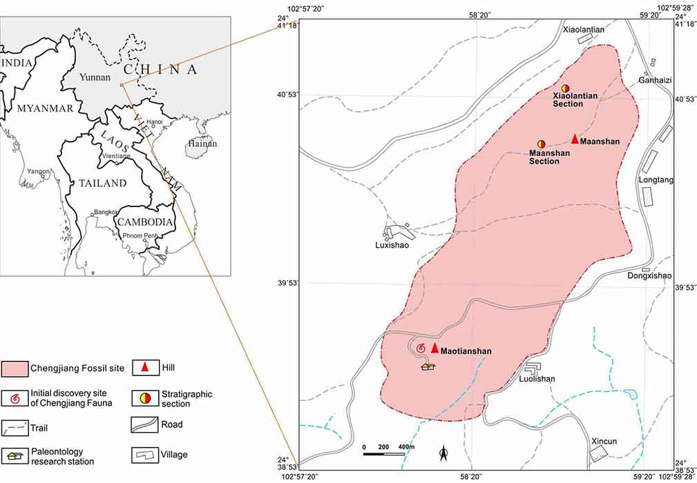
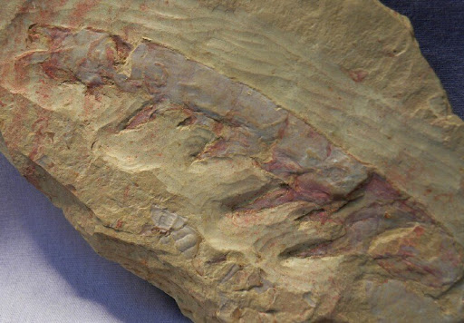

The Chengjiang Biota is located in Yunnan Province, China
 Figure 1: Map showing Chengjiang Biota within Yunnan (IUGS, 2022)
The Chengjiang Biota fossil site dates back 520 million years to the early cambrian period. this is so early in the cambrian that along with two other significant sites, chengjiang is one of the closest sites dated to the cambrian explosion, other sites close to the cambrian explosion include the Burgess Shale site in canada and the Sirius Passet site in greenland
Chengjiang was first discovered in 1984 by Hou Xian-guang, who found fossilized remains in the Maotianshan Shale (Hou et al., 1991).
Figure 2: HOU Xian-guang (Ynu.edu.cn, 2017)
The Chengjiang site is significant because it preserves soft-bodied organisms that rarely fossilize, providing a detailed record of early animal evolution
 Figure 3: Anomolacaris fossil found at The Chengjiang Biota Site (Fossilmall.com, 2025)
In 2012, the site was designated a UNESCO World Heritage Site, highlighting its importance in understanding the Cambrian Explosion
The Chengjiang site is significant because it preserves soft-bodied organisms that rarely fossilize, providing a detailed record of early animal evolution
Figure 3: Anomolacaris fossil found at The Chengjiang Biota Site (Fossilmall.com, 2025)
In 2012, the site was designated a UNESCO World Heritage Site, highlighting its importance in understanding the Cambrian Explosion
Explanation of index fossils and dating techniques.
How past continental positions affected climate.
Explanation of faunal succession, superposition, and absolute dating.